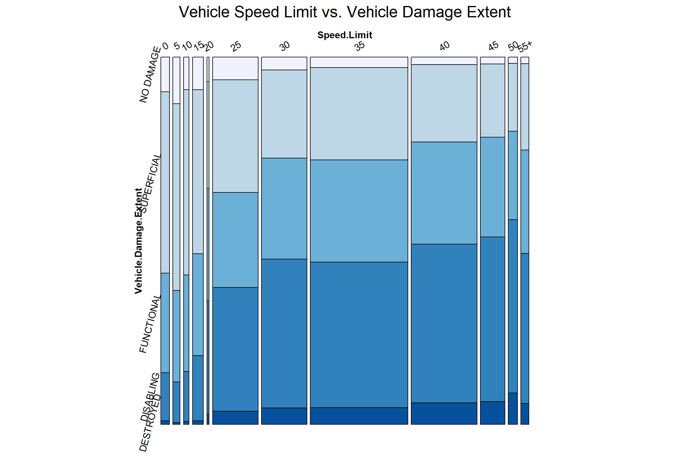

3 Results
3.1 Accident Hotspots
To discover the spatial dynamics of traffic collisions, our analysis aims to identify routes characterized by a higher incidence of accidents. The bar graph presents data on the number of traffic collisions categorized by route and cross street types from 2015 to 2023 in Montgomery County.
From the graph, we observe that County roads and Maryland State roads stand out with the highest number of crashes, both as route types and at cross street intersections. In contrast, areas like US (State), and Interstate (State) show fewer crashes, with incidents at cross streets consistently lower than those on the routes themselves. The categories of Ramp, Other Public Roadway, Government, and Service Road represent the safest zones with the least number of crashes.
Yet, this doesn’t necessarily mean that County roads and Maryland State roads are the most hazardous. It’s important to consider that this data is from a specific county in Maryland, skewing the numbers towards these road types. To identify the riskiest areas, additional information and context are needed. This intriguing snapshot invites us to look deeper and question what truly makes a road dangerous.
3.2 Time Patterns
Understanding the temporal patterns of road traffic accidents is crucial for developing effective safety measures and policies. By analyzing the frequency of crashes across different times of the day and week, researchers and policymakers can identify high-risk periods and underlying factors that contribute to these patterns.
We will analysis the yearly, monthly, weekly and hourly traffic collision pattern in Montgomery County, Maryland.
3.2.1 Yearly & Seasonal Patterns
The line graph below presents a detailed temporal analysis of traffic collision from 2015 to 2023, revealing several critical patterns within the data.

Significantly, there is a decline in the number of crashes during the year 2020. This aberration corresponds with the global onset of the COVID-19 pandemic, a period characterized by lockdowns and widespread restrictions on movement. The resulting reduction in road traffic during this time is likely the primary driver behind the observed decrease in crashes, as stay-at-home orders and the transition to remote work reduced the frequency of commuting and non-essential travel.
Moreover, the graph illustrates recurrent peaks in the number of crashes during the months of May and October across multiple years. The reasons behind these spikes may be multifaceted. In May, increased travel due to warmer weather and social events, such as Memorial Day weekend in the United States, could contribute to higher traffic volumes and consequently, a greater incidence of crashes. October’s peak might be influenced by a combination of factors, including the end of summer vacations, the resumption of the school year, and potentially more challenging driving conditions due to seasonal weather changes, such as reduced daylight and falling leaves, which can affect road visibility and traction. These observations suggest that there are underlying seasonal behaviors and external events that significantly influence the rate of traffic incidents.
3.2.2 Weekly & Time Patterns

The line graph delineates the total number of crashes per hour, segmented by weekday, from 2015 to 2023. A prominent observation is that weekdays experience a higher frequency of crashes compared to weekends. This pattern likely reflects the routine dynamics of workweek traffic with increased vehicle volume due to commuting.
Intriguingly, there are two distinct peaks that occur around 8 AM and 5 PM on weekdays, aligning with typical rush hour times when commuters are either heading to work or returning home. On weekends, the peaks is around 12 pm to 3 pm, which matches our routine. Since people tend to choose going out in the afternoon during the weekend, more traffic during that time. The data underscores the critical need for enhanced safety measures during peak commuting hours on weekdays to mitigate the risk of crashes.
3.3 Collision Causes
3.3.1 Driver Substance Abuse
Table 1: Percentage of Traffic Collision Involved Driver Substance Abuse
| None Detected | Detected | Unknown | |
|---|---|---|---|
| 71.19% | 3.64% | 25.17% |
Driver substance abuse stands as one potential causes of traffic collision. The table above indicates that in majority crash cases, no substances were detected from drivers that involved in accidents. There is only a notable minority of cases that substance abuse was confirmed. We will analysis more on the detected substance abuse cases in following stacked bar graph:

The four main categories of substance that detected from driver in traffic collision but prohibit are alcohol, illegal drugs, medications that impair driving ability and a combination of these substances.
In each categories, “Contributed” refers to instances where the substance present and contributed to the cause of the crash, suggesting a direct link between impairment and the accident; “Present”, on the other hand, indicates cases where the substance was detected, but without a definitive contribution to the crash established.
The graph clearly indicates that alcohol is the most commonly detected substance in traffic crashes, in both present and contributed categories. Also, across all substance categories, the ‘Contributed’ cases where the substance directly caused the crash roughly one-third of the all cases of that substance category. This ratio is consistent across all categories, indicating a significant direct impact of these substances on traffic safety. This underscores the critical need for robust preventive measures and strict enforcement of laws against driving under the influence of any impairing substances.
3.3.2 Driver Distraction
Driver distraction is recognized as another common cause of traffic collisions. Distraction comes in various forms and can be categorized as internal or external, based on the origin of the distraction. Internal distractions are those within the vehicle and include actions such as talking or listening to a cellular phone, texting, eating, or adjusting the vehicle’s controls. External distractions, by contrast, are outside the vehicle and can involve being distracted by external events, objects, or the actions of other people.
Table 2: Percentage of Traffic Collision Involved Driver Distraction
| Not Distracted | Inattention | Internal Distraction | External Distraction | Other |
|---|---|---|---|---|
| 62.07% | 15.00% | 1.30% | 0.55% | 21.08% |
According to the provided data in Table 2, 15% of traffic collision are involved in driver’s inattention, which include driver “looking but did not see” or “inattentive or lost in thought”. Internal distractions and external distraction only make up around 1.8% of collisions.

The accompanying graph further breaks down internal distractions, highlighting the most frequent activity that lead to crashes is other occupants in vehicle. To alleviate the potential hazards associated with internal distractions, it is recommended that drivers limit engagement in activities with other occupants in the vehicle and refrain from using mobile phones while driving.
3.3.3 Vehicle Equipment Problems
Table 3: Percentage of Traffic Collision Caused by Vehicle Equipment Problem
| No Equipment Problem Detected | Equipment Problem/Misuse | Unknown |
|---|---|---|
| 71.67% | 0.21% | 28.12% |
From table 3, only 0.21% of crashes are caused by problem/misuse of vehicle equipment such as “start/tether loose”, “belt(s) misused” or “belts/anchors broke”. This low percentage in equipment problem/misuse suggests overall good quality on vehicle equipment safety but regular maintenance is still necessary to prevent the possible equipment problem listed above.
3.3.4 Vehicle Movement
Lastly, to understand the status of the vehicle in the traffic collision, we classified the vehicle movement into following categories:
| Category | Description |
|---|---|
| In Motion | Vehicle is accelerating, moving in a constant speed or negotiating a curve driving |
| Turning | Vehicle is making a left, right, U turn or changing lanes |
| Starting | Vehicle is starting from lane or from park |
| Traffic | Vehicle is entering or leaving the traffic lane |
| Stationary | Vehicle parked, is parking or stopped in traffic lane |
| Maneuvering | Vehicle is passing, skidding, slowing or stopping |
In the mosaic plot analysis, a strong association emerges between “Vehicle Movement” and “Vehicle Damage Extent”, with chi-square value equals to zero. Notably, the darkest blue part, indicates the vehicle are destroyed after collision, reveals a highest proportion in state of motion among all 6 movement categories. This observation highlighted vehicles in motion has the highest possibility has severe damage during collisions. In contrast, the analysis underscores a minimal proportion of superficial damage occurring when vehicle in motion.
Remarkably, the second-highest incidence of substantial damage manifests in instances where vehicles are engaged in turning maneuvers, which also should be pay attention during driving.
3.4 Environmental Impact
In this section, we’ll use two tools to explore how multiple variables interact and potentially influence each other. First, we have mosaic plots, which are great for visually showing relationships between categories. They help us see if different factors are linked. In a perfect world where these factors don’t affect each other, the mosaic plot would show even cuts across each category. Second, we’ll use the chi-square test, a statistical method that checks if these variables are independent of each other. Together, these tools will give us a clearer picture of the complex relationships between multiple variables.
3.4.1 Weather Condition and Surface Condition
For better visualization purposes,, we categorize weather conditions into two groups for simplicity: ‘adverse’ weather (including conditions like foggy and snowy) and ‘clear’ weather (which combines both cloudy and clear skies). Similarly, we classify road surface conditions into four main categories including dry, snow/ice, wet, and others, and ignoring others due to its small frequency on the final graph.

The mosaic plot reveals some clear patterns: In both clear and adverse weather conditions, wet road surfaces are associated with a higher proportion of severe, disabling car crashes compared to dry surfaces. Interestingly, under clear weather, roads with snow or ice have the highest proportion of severe crashes. However, in adverse weather conditions, it’s somewhat counterintuitive to find that more severe crashes occur on dry surfaces rather than on snow or ice. The most concerning observation is that the combination of adverse weather and wet roads leads to the highest severity in vehicle damage compared to all other weather and road surface combinations.
3.4.2 Speed Limit
Let’s take a closer look at another crucial factor: the speed limit, and its relationship with the severity of vehicle damage. For simplicity, we’ve grouped all speed limits of 55 mph and above into a single category labeled 55+, due to their relatively small numbers in the data.

Our mosaic plot shows a noticeable trend: as the speed limit increases, so does the severity of car crashes, including those resulting in disabling damage or completely destroyed vehicles. Interestingly, both the highest proportion of disabling and destroyed car crashes occur at a speed limit of 50 mph. On the other end of the spectrum, at a speed limit of just 5 mph, there’s a significantly higher proportion of car crashes where the vehicles escape without any damage. This observation suggests a clear link between higher speed limits and more severe vehicle damage in crashes.
3.4.3 Light Condition and Traffic Control
Next, we’ll examine a heatmap that looks at the interplay between light conditions and traffic control in car crashes. This heatmap is laid out so that each column corresponds to a fixed light condition, while each row represents a different traffic control scenario, while faceted with different levels of injury.

The heatmap reveals that under all light conditions, and across all levels of injury, the majority of car crashes occur either at traffic signals or in areas with no traffic control. In situations of darkness with no lighting, crashes with no traffic control tend to form the highest proportion in each injury category. Additionally, we notice more diverse patterns between light and traffic control conditions in crashes with no apparent injuries. However, as the severity of injuries increases, the range of traffic control conditions and light conditions involved narrows down. Notably, for serious suspected injuries and fatalities, there are no crashes reported at school zone signs, railway crossing devices, or near person crossing signs.
3.4.4 Chi-Square Test
Finally, we conducted chi-square tests to explore the relationship between various independent variables and two key outcomes: injury severity and vehicle damage extent. We set a significance threshold at an alpha of 0.01, meaning we consider a relationship statistically significant if the p-value is less than 0.01.
| Dependent Variable | Independent Variable | P-value | Correlation? |
|---|---|---|---|
| Vehicle Damage Extent | Surface Condition | 5.03e-07 | Yes |
| Weather | 7.296e-69 | Yes | |
| Traffic Control | 0 | Yes | |
| Light | 0 | Yes | |
| Speed Limit | 0 | Yes | |
| Injury Severity | Surface Condition | 2.459e-07 | Yes |
| Weather | 2.105e-10 | Yes | |
| Traffic Control | 1.992e-108 | Yes | |
| Light | 8.079e-35 | Yes | |
| Speed Limit | 0 | Yes |
3.5 Vehicle Condition
In this section, we aim to analysis the patterns between collision severity and key vehicular attributes, specifically, the age and size of the vehicles involved.
3.5.1 Vehicle Age
The boxplot shows us that the ages of vehicles across different categories of damage extent are skewed to the right, with all the medians situated to the left of the red line that represents the average age. We observe that compared to other groups, the median vehicle ages are lower in the no damage and superficial damage groups, which suggests that younger vehicles tend to dominate the no damage and superficial damage groups. While the majority of vehicles are in the functional and disabling damage groups, they also share similar age distributions, with medians close to the mean. However, vehicles that are destroyed in crashes appear to have a wider spread of ages, with a noticeable portion being older than the average vehicle age when compared to other categories.
3.5.2 Vehicle Size
In this section, we’re looking at a Cleveland dot plot to see if the size of a vehicle affects how much damage it gets in a crash. Here’s what we found: lighter cars are in more accidents than any other size. Medium-sized, heavy, and vehicles of unknown or other sizes tend to have similar damage patterns, usually superficial damage. Interestingly, for lighter vehicles, as the damage gets worse, the number of accidents increases too. On the other hand, for larger vehicles, once they get past superficial damage, the number of accidents steadily decreases